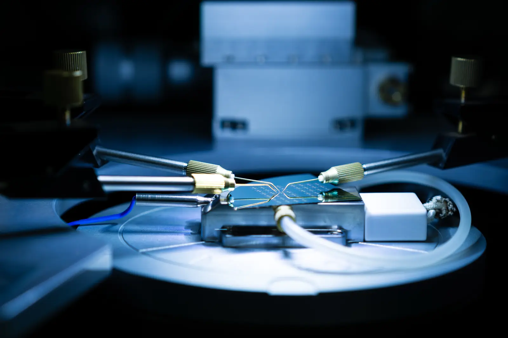

Energy Device and Nano-Engineering Laboratory
Better batteries, displays and chips depend on how precisely their layers are formed and joined: nanometer-thin films stacked in batch processes for chips and displays, and solid sheets bonded over large areas on continuous roll-to-roll lines for batteries. We develop precision manufacturing processes, grounded in mechanics, for solid-state batteries, optoelectronic devices, 2D material devices and next-generation semiconductors.
Department of Mechanical Engineering, Seoul National University
Probe station in the lab, 2025
Research
Across four areas we ask one question: how to form and join the layers of a device precisely enough that it works, lasts and can be manufactured. We answer it through solid mechanics, energy transfer and process design.
Inside the lab
Where our devices are made and tested. The lithography area is lit with yellow light so that photoresist is not exposed.
Recent publications
All publicationsProspective students
New batteries, displays and chips reach people only once someone works out how to make them. If you want to be the one who does, we would like to hear from you. We welcome highly motivated students from any undergraduate major, and two to four new graduate students join the lab each semester.
Email your CV, transcript and one page on the research you want to do and why to
Research
Many of the devices that will matter most in the coming decades cannot yet be made well at scale: batteries that store more energy safely, light sources and displays small enough to wear, and chips that compute and move data with far less energy. What makes them hard to build is how their layers must be formed and joined. Chips and displays are built in batch processes, one wafer or panel at a time, with layers only nanometers thick and features smaller than ever. Solid-state batteries are built on continuous roll-to-roll lines, where solid sheets must bond completely across large areas at line speed. In every case, dissimilar layers must be joined without damage, the interfaces must stay intact while the device operates, and all of it must be made reliably and at high yield. That is a manufacturing problem governed by solid mechanics and energy transfer, which makes it a mechanical engineering problem, and it is the one we work on.
How we make devices
Facilities
Deposition systems, cleanroom tools, gloveboxes and test benches used across our projects. Select a photo to enlarge it.